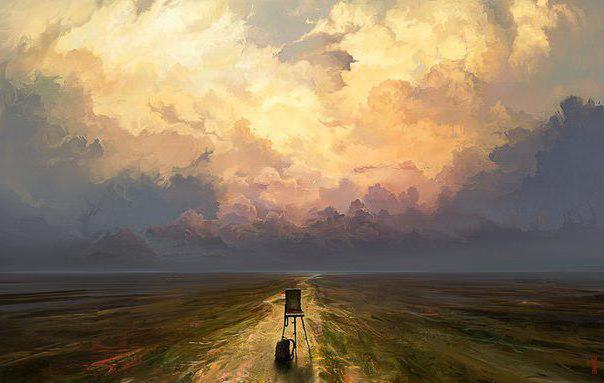

Изобразительное искусство

У каждого человека есть определенная деятельность, которой он занимается на досуге, то есть в свободное от работы и других обязательств время. Кто-то любит читать книги, кто-то занимается рукоделием, одни проводят свободное время за чашкой чая, в то же время другие любят пешие прогулки. Все это и называется хобби. Слово «хобби» произошло от английского «hobby» — увлечение, любимое дело. Следовательно, хобби – некое занятие, которым занимаются на досуге для наслаждения и отдыха от повседневных дел.
Мое хобби – рисование. Я люблю в свободное от учебных занятий время и после повседневных дел дать волю воображению и изобразить что-нибудь на листке бумаги. Рисую я преимущественно акварельными красками, гуашью, при этом мне нравится рисовать и цветными карандашами. Рисование помогает мне расслабиться, услышать собственные мысли, отойти от повседневных дел. Кроме того, если я злюсь или у меня плохое настроение, рисование помогает мне быстро справиться с этим. Не многие знают, что рисование способствует концентрации внимания, совершенствует моторно-зрительную координацию и двигательные навыки, помогает развить "твердость" руки и четкость движений. Также научно доказано, что рисование приносит положительный результат и для другой деятельности, например, помогает в изучение иностранных языков. А если есть желание развить память или нужно что-либо запомнить, то нарисовать информацию - лучший способ ее запомнить. В рисовании нет ничего отрицательного, если все устроено правильно: удобный стол, хорошее освещение, правильно подобранный стул. К минусам можно отнести разве что испачканную одежду и ближайшие предметы, если рисует маленький ребенок.
Профессионально заниматься хобби не обязательно – оно нужно для расслабления, для отдыха. Конечно, можно заниматься для достижения каких-либо успехов, однако первоочередное назначение хобби – отвлечение от повседневной суеты.
Кто-то любит тихие одинокие посиделки дома, кто-то любит посещать какие-либо общественные шумные места: ночные клубы, кафе, рестораны, бары, парки, третьи любят провести свой отдых за компьютерами. Выбор самый разный, все зависит от увлечений и характера человека.